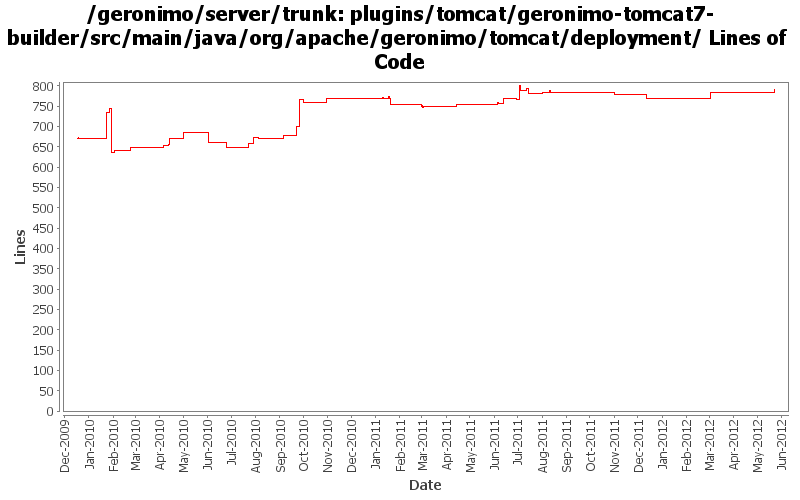

[root]/plugins/tomcat/geronimo-tomcat7-builder/src/main/java/org/apache/geronimo/tomcat/deployment

| Author | Changes | Lines of Code | Lines per Change |
|---|---|---|---|
| Totals | 62 (100.0%) | 997 (100.0%) | 16.0 |
| xuhaihong | 23 (37.1%) | 322 (32.3%) | 14.0 |
| gawor | 10 (16.1%) | 248 (24.9%) | 24.8 |
| djencks | 18 (29.0%) | 195 (19.6%) | 10.8 |
| rwonly | 6 (9.7%) | 130 (13.0%) | 21.6 |
| genspring | 4 (6.5%) | 83 (8.3%) | 20.7 |
| dblevins | 1 (1.6%) | 19 (1.9%) | 19.0 |
Merge changes from GERONIMO-6341 orm.xml does not take effect in latest Geronimo 3.0 beta branch.
7 lines of code changed in 1 file:
GERONIMO-6292 Share the japser servlet between jasper plugin and web-container plugin.
26 lines of code changed in 1 file:
GERONIMO-6228 Jar resource and getRealPath cache should not be cleaned while uninstalling embedded WAB in EBA
13 lines of code changed in 1 file:
GERONIMO-6204 Decouple OpenWebBeans from web container
0 lines of code changed in 1 file:
GERONIMO-6143 Create a fragment context for each sub modules in the EAR package
4 lines of code changed in 1 file:
GERONIMO-6106 Clean up temp files created in the deployment process
Use a thread local in the FileUtils to hold all the temp files in the deployment process
0 lines of code changed in 1 file:
GERONIMO-6106 Clean up temp files created in the deployment process
10 lines of code changed in 1 file:
GERONIMO-6059 New look and feel of Geronimo 3.0 admin console (Step 2, New UI design)
2 lines of code changed in 1 file:
GERONIMO-5050 really use only one owb context for the whole ear, and combine all the module info into it
2 lines of code changed in 1 file:
GERONIMO-6043 gbean reordering so initorder can work
2 lines of code changed in 1 file:
GERONIMO-5050 Start of always using openejb for owb
4 lines of code changed in 1 file:
GERONIMO-6024 use the identifySpecDDSchemaVersion to replace the new added method isSchemaDefined.
4 lines of code changed in 1 file:
GERONIMO-6024 support dd schema validation when deploy web app
42 lines of code changed in 1 file:
GERONIMO-6025 make the url-pattern validation happen in a single place
2 lines of code changed in 1 file:
David Jencks' workaround for not re-initializing the OWB context in the servlet side of things when there is one in the app
19 lines of code changed in 1 file:
re-enable the message-destination handling logic for spec and vendor DD.
1 lines of code changed in 1 file:
a. Update the WebAttributeNames in the geronimo-web module to WebApplicationConstants
b. Update the WebApplicationConstants in the geronimo-wab module to WABApplicationConstants
5 lines of code changed in 1 file:
move schema conversion "openejb-jar" from SchemaConversoinUtils to jetty/tomcat builders.
7 lines of code changed in 1 file:
GERONIMO-5902 Ignore web service from web application side if it is also an EJB web service
10 lines of code changed in 1 file:
Ignore web service configuration if it is a JSP in the web.xml
4 lines of code changed in 1 file:
GERONIMO-5839 Add module name prefix for WSDL path
1 lines of code changed in 1 file:
GERONIMO-5841 Only check the servlets configured by users
9 lines of code changed in 1 file:
a. Enable POJO web service class enhancement on the runtime for Tomcat assembly
b. Disable web service deployer in UDDI module temporarily
33 lines of code changed in 1 file:
GERONIMO-5773 Referenced resource cannot be generated by plan creator (Patch from FangShenhao)
0 lines of code changed in 1 file:
revert the changes in 1060171, and will try a new approach.
38 lines of code changed in 1 file:
re-enable the codes that deal with the web service fake servlet
42 lines of code changed in 1 file:
Revert "m2 has been branched, re-enable web service in tomcat builder of trunk."
Because there's another problem in the jaxws code.
37 lines of code changed in 1 file:
m2 has been branched, re-enable web service in tomcat builder of trunk.
38 lines of code changed in 1 file:
GERONIMO-5050 provide a means of sharing the openejb-initialized owb context with web containers. Use it for tomcat
10 lines of code changed in 1 file:
GERONIMO-5624 more info tree for tomcat
0 lines of code changed in 1 file:
GERONIMO-5557 Add a similar context element in the schema, currently we could use this elements for most context level attributes configurations and context parameters. (Based on the patch from viola.lu)
77 lines of code changed in 1 file:
GERONIMO-5624 use info tree for tomcat web app deployment
62 lines of code changed in 1 file:
GERONIMO-5511 context-priority-classloader is not allowed in geronimo-web.xml for backwards compatibility (Based on the patch from viola)
15 lines of code changed in 1 file:
pass stripped down and complete DD to Tomcat. Make sure Tomcat only parses the stripped down version.
16 lines of code changed in 1 file:
GERONIMO-5066 Fix a lot of problems with jndi including wrong finders and inconsistent adding of injections
15 lines of code changed in 1 file:
I am too aggressive in the last commit, we should only update the deployment descriptor if the version is after 2.5
21 lines of code changed in 1 file:
Remove jndi related items from deployment plan to prevent Tomcat handles them.
24 lines of code changed in 1 file:
regression - return null if web.xml is not found and it's not a war file
28 lines of code changed in 1 file:
cf openejb rev 958340. marshal persistence.xml in the correct namespace, marshal methods names changed
2 lines of code changed in 1 file:
GERONIMO-5190 use openejb-jee jaxb tree for spec dds
55 lines of code changed in 1 file:
(21 more)